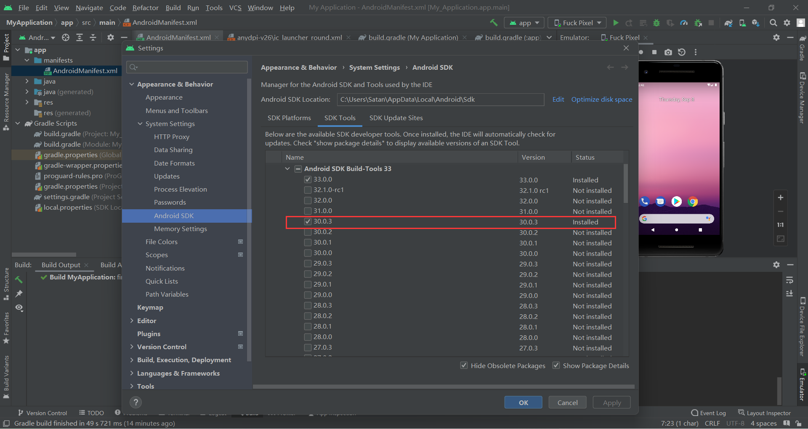
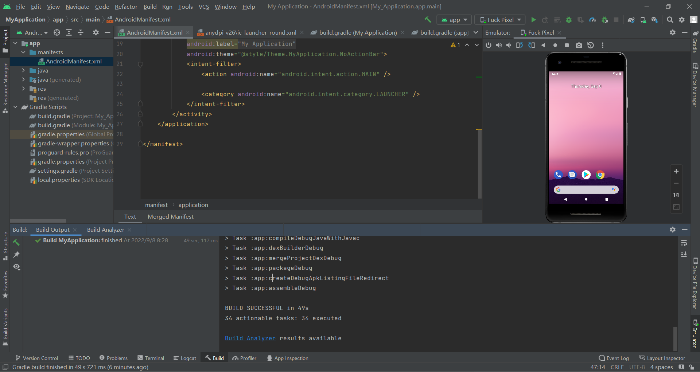

Android Studio运行Failed to find Build Tools revision 30.0.3
问题
第一次安装好Android Studio2022.5的版本之后开启虚拟机运行文件报错提示
Failed to find Build Tools revision 30.0.3
打开SDK已经安装了33.0.0，报错提示找不到30.0.3
解决
方法一
在设置中Android SDK把30.0.3的SDK安装

方法二
更改build.gradle文件，将其中buildToolsVersion指定为“33.0.0”
buildToolsVersion ‘33.0.0’
结果
成功运行
